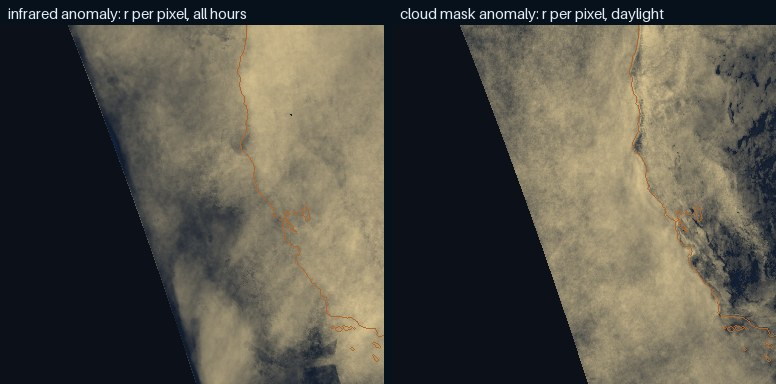

Hourly, for forty days, the weather model's cloud fields against the satellite frames at the same instant, with the two controls a physics skeleton has to beat.
HRRR is NOAA's 3 km hourly weather model. It carries cloud fractions by layer and a physics-rendered satellite view (a simulated 10.7 µm brightness temperature). If we are to paint kilometre-scale texture onto its fields, they must first put cloud where GOES saw cloud, today, not on average. The measure is correlation of weather anomalies: what is left after the mean map for that hour of day is removed from both sides, so geography and the daily cycle cannot earn credit.
Yes, coarsely and near the coast. HRRR knows today's sky, not just the climate: it beats the shuffled-day floor everywhere, and beats yesterday's frame by two to four times. It does not come close to the frame from an hour ago. Its placement is right at the scale of the deck's edge and above, and unreliable pixel by pixel.
Three numbers carry the verdict. For the daylight cloud mask over ocean, the anomaly correlation between HRRR's low cloud fraction and what GOES saw is 0.36 (total cloud, 0.40), against 0.00 for the same hour on a random other day and 0.10 for the satellite's own frame a day earlier; the frame an hour earlier scores 0.62. For infrared temperature over the whole covered frame it is 0.45 against 0.01 and 0.19, with an hour's persistence at 0.75. And agreement grows with cell size, from 0.45 at 4 km to 0.58 at 122 km for infrared, 0.36 to 0.45 at 61 km for the mask: the model has the pattern, not the pixels. At 15 km cells it finds 77–82% of the satellite's cloud and 27% of what it paints is not there. It also runs slightly cloudier over the ocean than the satellite (68–71% cover against 61%) and about 4 K warm in infrared.
Where it knows the sky is where the deck meets the land. Within 50 km of the coast the cloud-mask agreement is 0.47 (0.53 for total cloud); 400 km out it is 0.25. Over open ocean the infrared agreement is 0.28, over land 0.43. The model gets the burn-off, the coastal clearing and the synoptic shape; the texture of the open-ocean deck is beyond it.
What this means for building on it. The physics fields carry real, present-day information at exactly the scale a CorrDiff-style generator takes from its conditioning: the mean placement. Everything below about 30 km would be the generator's invention, which is the design. Two cautions. This is HRRR's analysis hour, its best estimate of now with satellite data assimilated, so it is an upper bound on what a forecast hour would give; the probe that matters for "what happens next" is the 6- and 12-hour forecasts against GOES, where persistence has collapsed and the physics has to carry the sky alone. And for frame-to-frame continuity the last real frame beats the model by a wide margin, so the physics earns its place for where the sky goes over hours, not for the next ten minutes.
Per pixel, over the whole month: how well HRRR's anomaly tracks the satellite's. Warm is agreement, blue is anti-correlation, dark is none. The dimmed third on the left is outside the model's western edge. Left: infrared temperature, all hours. Right: the daylight cloud mask against low cloud fraction, over ocean.

Anomaly correlation for every hour of the month. The real pairing against the shuffled-day floor and the two persistence bars. Where the dots for the real pairing sit above the floor and above yesterday's frame is where the physics is adding something a climatology and a photograph could not.
The deck is a coastal object. Agreement by band offshore and inland, and after block-averaging both fields to coarser cells, which asks at what scale the model's placement becomes reliable.
| band | HRRR covers | infrared anomaly r | shuffled | persist 24 h | cloud mask r | shuffled |
|---|
| cell size | infrared anomaly r | shuffled | cloud mask r | shuffled |
|---|
GeoColor, the real infrared frame, the model's simulated infrared, the satellite cloud mask, and the model's low cloud fraction. Chosen by cloud cover (a clear-ish, a mixed and an overcast daylight hour) and by agreement (the best and the worst hour of the month).
The analysis hour has GOES assimilated into it. The 6- and 12-hour forecasts do not: they are the physics carrying the sky alone, which is what a generator would lean on once the last real frame is hours old. Same pairs, same controls. The persistence bars are the satellite's own frame the same number of hours earlier, the thing a forecast has to beat to be worth anything.
| HRRR | cloud mask r, daylight ocean | shuffled | infrared r | shuffled | infrared r, ocean | hit / false alarm, 15 km | pairs |
|---|---|---|---|---|---|---|---|
| forecast hours not scored yet | |||||||